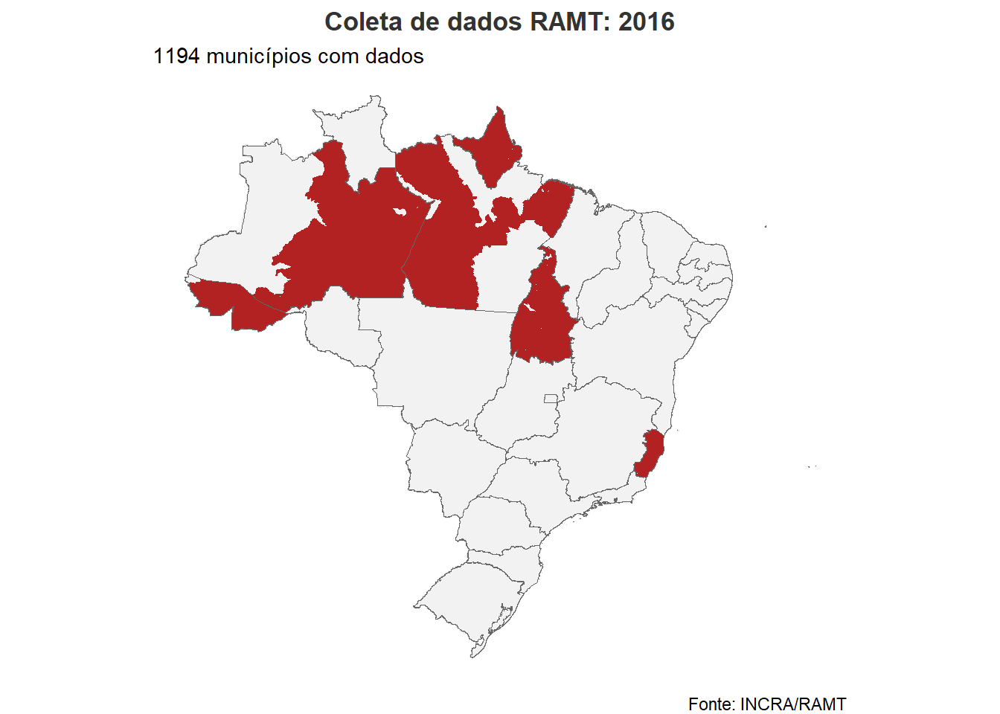
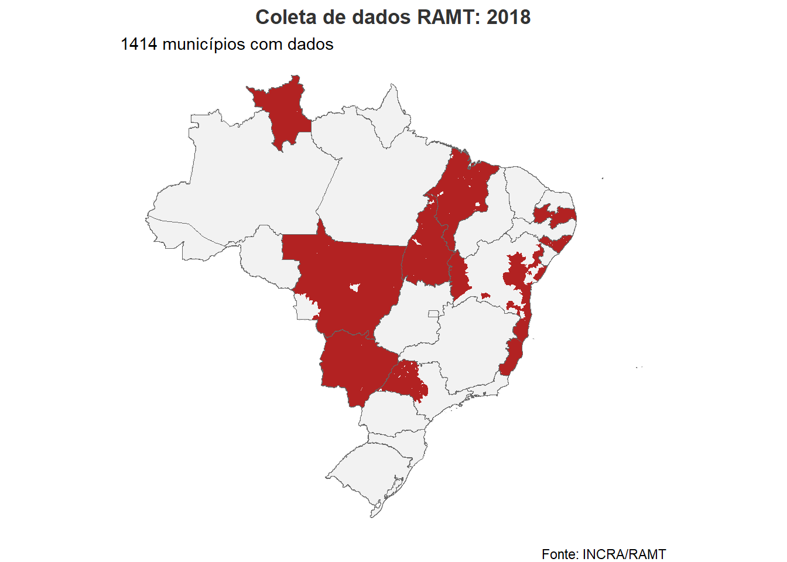
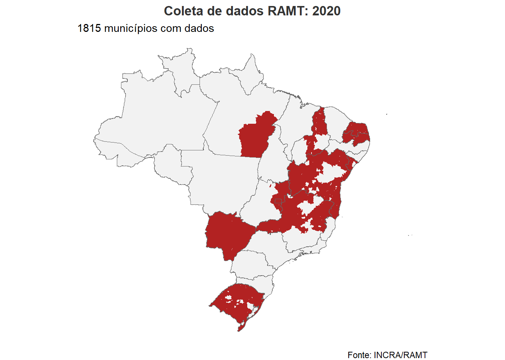
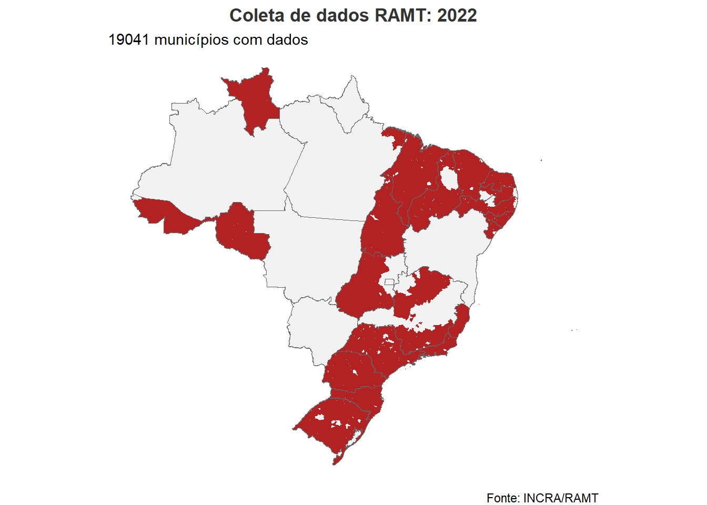
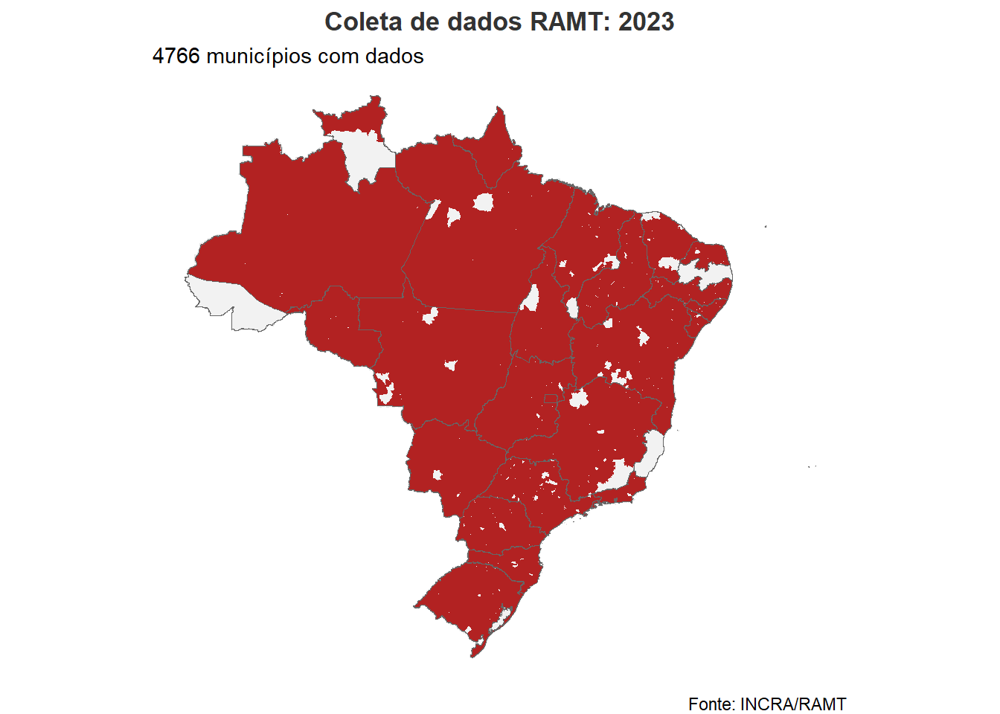
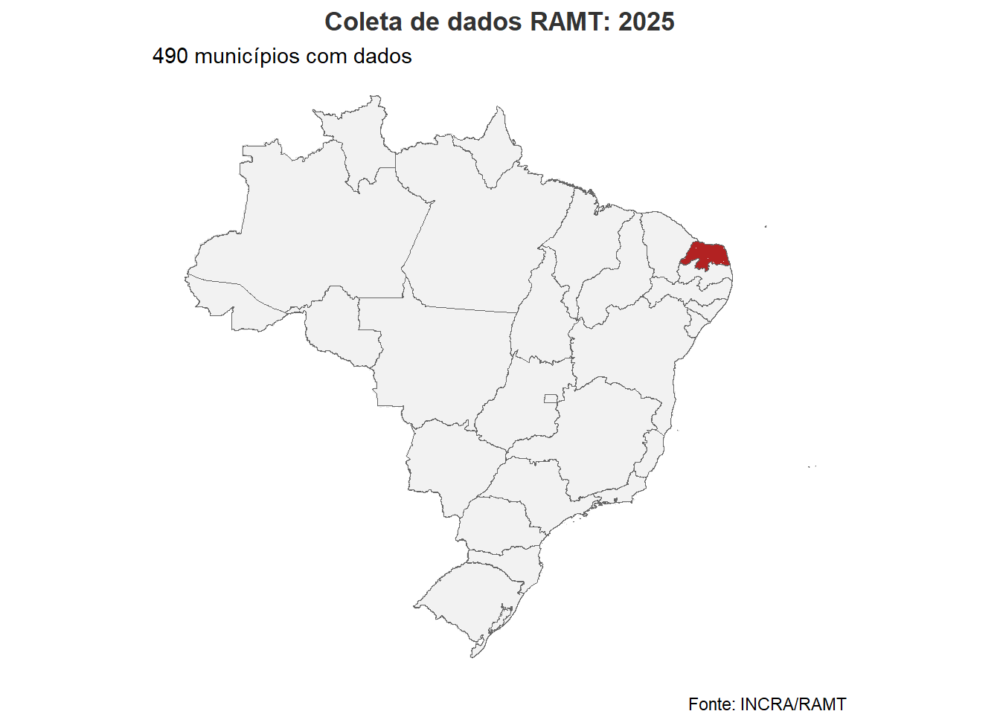
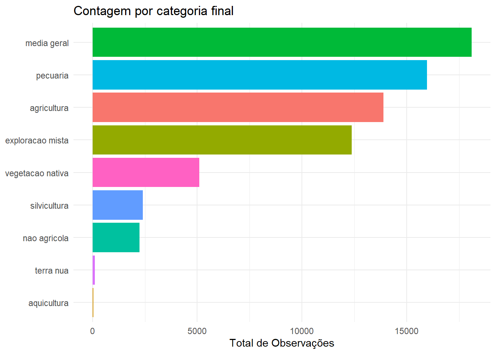
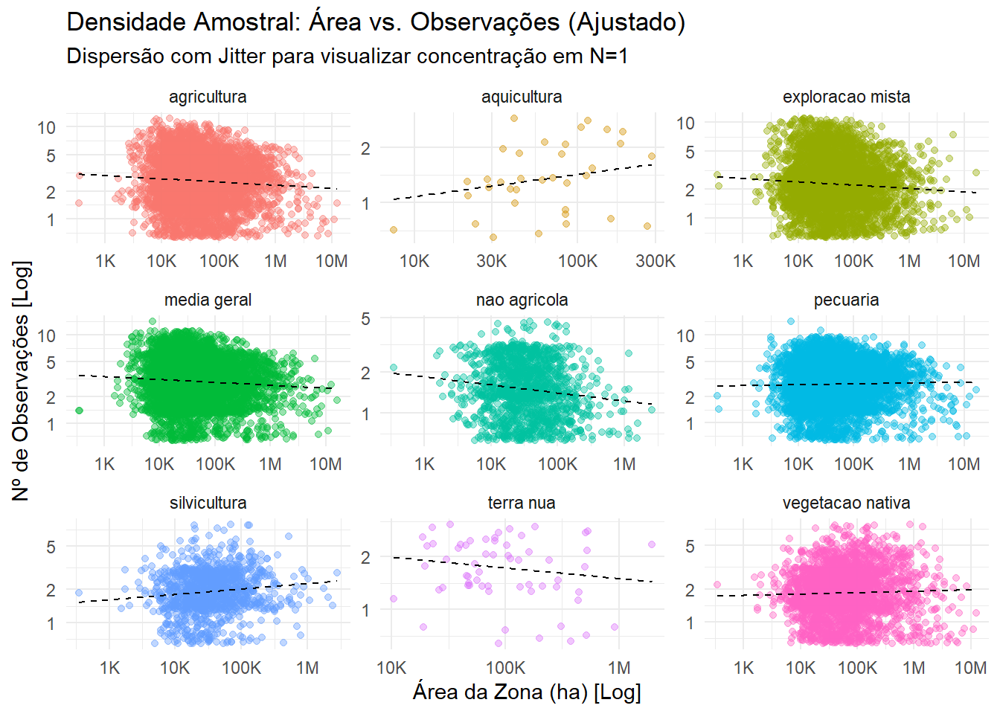
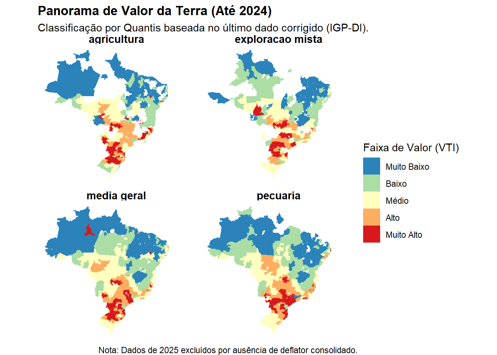

Os dados dos RAMT (Relatórios de Análise do Mercado de Terras) são elaborados pelo INCRA a partir da análise de diferentes mercados de terras em todo o território nacional, sendo essas terras tratadas como zonas homogêneas. Estas zonas são clusters (agrupamentos homogêneos com características semelhantes) que, a partir de então, têm seu valor analisado tendo em vista o uso da terra e as dinâmicas desses diferentes mercados. Os clusters são formados com base em um conjunto de variáveis: vocação produtiva da terra, gestão econômica e atividades agrícolas, nível tecnológico e a concentração fundiária (tendo em vista o índice de Gini fundiário). A metodologia de clusterização adotada é a de Ward, criando uma árvore de clusters inicialmente que depois é diferenciada por meio de algoritmos de K-means. O tratamento estatístico pressupõe uma distribuição aproximadamente normal dentro da zona homogênea. Os índices de inflação são corrigidos segundo o IGP-DI. Esse procedimento de clusterização é feito dentro de uma superintendência regional do INCRA.
A metodologia de Ward baseia-se na criação de partições que minimizem a Soma dos Quadrados dos Erros (SQE), ou seja, a soma das distâncias euclidianas quadráticas de cada amostra em relação ao centroide (média) do cluster, conforme a fórmula:
A otimização do procedimento de cluster é feito por meio do processo de “K-means”. Esse algoritmo forma K grupos diversos de municípios que posteriormente serão modificados movendo cidades de um local ao outro de modo a maximizar ou minimizar a função, aumentando a qualidade do cluster.
O banco de dados estrutura-se em 18 variáveis, organizadas para capturar a dinâmica espacial e econômica do mercado de terras. As observações são indexadas temporalmente (ano) e geograficamente (code_muni, UF, origem), assegurando a identificação unívoca dos registros dos Relatórios de Análise do Mercado de Terras (RAMT).
As variáveis econômicas decompõem-se em tríades métricas (mínimo, médio e máximo) para o Valor da Terra Nua (VTN) e Valor da Terra com Imóvel (VTI). Estatisticamente, estes limites não são arbitrários: segundo a metodologia do INCRA, eles delimitam o intervalo de validade amostral.
Para fins analíticos, a heterogeneidade das classificações originais (tipologia) foi harmonizada na variável categoria_final, garantindo consistência sintática. A dimensão espacial é preservada pela geometria vetorial (geom), habilitando operações de geoprocessamento
O procedimento de unificação de categorias foi feito através do seguinte loop, sendo o loop taxativo, esse loop foi construído com ajuda do gemini, após um processo de verificação das tipologias via a função unique do package “dyplr”:
Os valores apresentados para terra foram posteriormente deflacionados para o ano de 2024, com uso do indice IGP-DI que é aquele utilizado pelo incra segundo a normativa ( número da normativa, adicionar bibtex) seguindo o seguinte script:
veja o código
#|echo: FALSE#|eval : FALSE#### 1. Preparação do Índice (A Lógica do Produto Acumulado) ####indice_raw <-ipeadata(code ="IGP_IGPDIG", language ="br")tabela_indices <- indice_raw %>%mutate(ano =year(as.Date(date)),# Transforma taxa percentual em fator multiplicativo (ex: 0.5% vira 1.005)fator_mensal = (value /100) +1 ) %>%# Agrupa para obter a inflação anualizadagroup_by(ano) %>%summarise(fator_anual =prod(fator_mensal, na.rm =TRUE), .groups ="drop" ) %>%arrange(ano) %>%# --- AQUI ESTÁ A CORREÇÃO QUE VOCÊ PEDIU ---# O índice do ano X é o produto de tudo que veio antes (acumulado)mutate(indice_acumulado =cumprod(fator_anual))#### 2. Definindo a Base (Para onde queremos levar o dinheiro) ##### Vamos pegar o valor do índice no último ano disponível (Ex: 2024)indice_base_topo <-tail(tabela_indices$indice_acumulado, 1)#### 3. Cruzamento e Cálculo ####resultado_igpdi <- df_joined %>%mutate(ano =as.numeric(ano)) %>%# Garante numérico para o joinleft_join(tabela_indices, by ="ano") %>%mutate(# FATOR DE CORREÇÃO:# Quanto o dinheiro valia "no final da história" DIVIDIDO por quanto valia "naquele ano"fator_deflator = indice_base_topo / indice_acumulado ,# Aplica nas colunasacross(c("vti_media", "vti_minimo", "vti_maximo", "vtn_media", "vtn_minimo", "vtn_maximo"), ~ .x * fator_deflator, .names ="IGPDI_{.col}" ) ) %>%# Limpeza final (mantém originais e as novas colunas 'real_')select(colnames(df_joined), starts_with("IGPDI_{.col}"))
2.Disponibilidade dos dados
A coleta de dados dos relatórios RAMT apresenta significativa heterogeneidade entre as superintendências regionais do INCRA. A base de dados abrange o período de 2016 a 2025, com destaque para o ano de 2023, que apresenta maior cobertura territorial devido à publicação do Atlas do Mercado de Terras. No entanto, identificaram-se sobreposições entre o Atlas e relatórios de anos adjacentes. Metodologicamente, optou-se pela prevalência dos dados dos relatórios originais em casos de conflito, visando manter a consistência da série histórica. Essa decisão justifica as lacunas observadas em alguns estados nos mapas de 2023, onde as informações do Atlas foram suprimidas em favor dos registros dos relatórios.
Seguem os mapas sobre as disponibilidades dos dados dos relatórios: ::: {.panel-tabset}
2016

2017
2018

2019
2020

2021
2022

2023

2024
2025

:::
As observações variam de acordo com a quantidade de cada tipologia, a quantidade de observações para cada tipologia foi a seguinte:
3. Análise e distribuições
A estatística descritiva revela uma oscilação expressiva nos valores de VTI e VTN ao longo da série histórica. Essa volatilidade não reflete necessariamente uma tendência de mercado, mas sim a heterogeneidade espacial da coleta de dados em cada exercício. A tabela a seguir consolida as métricas de tendência central (média) e dispersão (mínimos e máximos) para ambas as categorias.
veja o código
# 1. Preparar os dados (Agregação Manual)tabela_pivo <- df_analise |>st_drop_geometry() |>group_by(ano) |>summarise(# Métricas para VTIvti_med =mean(vti_media, na.rm =TRUE),vti_min =min(vti_minimo, na.rm =TRUE),vti_max =max(vti_maximo, na.rm =TRUE),# Métricas para VTNvtn_med =mean(vtn_media, na.rm =TRUE),vtn_min =min(vtn_minimo, na.rm =TRUE),vtn_max =max(vtn_maximo, na.rm =TRUE),# Contagem (Opcional, mas bom para auditoria)n_registros =n() )# 2. Gerar a Tabela Profissionaltabela_pivo |>gt() |># --- Cabeçalho ---tab_header(title =md("**Evolução Histórica de Preços (VTI vs VTN)**"),subtitle ="Valores Agregados por Ano (Média Nacional e Amplitude)" ) |># --- Formatação Numérica (Antes de fundir) ---fmt_number(columns =-ano, # Formata tudo exceto o anodecimals =0, # Sem centavos para limpar a vistasep_mark =".",dec_mark ="," ) |># --- O PULO DO GATO: Fusão de Colunas (Pattern) ---# Cria o formato: "Média (Mín - Máx)"cols_merge(columns =c(vti_med, vti_min, vti_max),pattern ="{1} ({2} - {3})" ) |>cols_merge(columns =c(vtn_med, vtn_min, vtn_max),pattern ="{1} ({2} - {3})" ) |># --- Renomear as Colunas Finais ---cols_label(ano ="Ano",vti_med =md("**VTI (R$/ha)**<br><small>Média (Mín - Máx)</small>"),vtn_med =md("**VTN (R$/ha)**<br><small>Média (Mín - Máx)</small>"),n_registros ="Nº Municípios" ) |># --- Alinhamento e Estilo ---cols_align(align ="center", columns =everything()) |>opt_row_striping() |># Listras zebradas para facilitar leituratab_options(table.width =pct(100), # Ocupa 100% da largura do containerdata_row.padding =px(6) )
Evolução Histórica de Preços (VTI vs VTN)
Valores Agregados por Ano (Média Nacional e Amplitude)
Ano
VTI (R$/ha) Média (Mín - Máx)
VTN (R$/ha) Média (Mín - Máx)
Nº Municípios
2016
6.050 (346 - 48.788)
4.692 (120 - 25.978)
1.194
2017
18.427 (53 - 98.250)
18.661 (255 - 98.250)
5.963
2018
11.259 (470 - 559.065)
11.705 (470 - 524.047)
4.022
2019
18.114 (−3.896 - 86.875)
16.038 (−2.359 - 83.580)
4.271
2020
13.608 (361 - 89.751)
12.039 (125 - 82.125)
5.912
2021
28.362 (602 - 146.584)
26.032 (492 - 129.646)
3.501
2022
53.039 (−3.896 - 2.180.003)
48.266 (−2.359 - 2.131.786)
19.041
2023
47.787 (100 - 2.180.003)
42.760 (80 - 2.131.786)
21.191
2024
44.513 (846 - 309.402)
40.408 (153 - 142.117)
4.641
2025
7.582 (1.474 - 34.731)
6.714 (1.313 - 33.982)
490
A distribuição amostral revela a predominância de dados agregados (‘Média Geral’), seguida pela Pecuária, refletindo a capilaridade extensiva dessa atividade no território nacional. Nota-se, contudo, um volume expressivo de dados classificados como ‘Exploração Mista’, o que sugere desafios na segregação precisa do uso do solo em diversas regionai.
veja o código
#Rever o parágrafo acima, está ruim.# Prevenção contra objeto SF pesadodados_plot <-if(inherits(df_analise, "sf")) sf::st_drop_geometry(df_analise) else df_analiseggplot(dados_plot, aes(x =fct_rev(fct_infreq(as.factor(categoria_final))), fill =as.factor(categoria_final))) +geom_bar(show.legend =FALSE) +# Gira o gráficocoord_flip() +labs(title ="Contagem por categoria final",x =NULL,y ="Total de Observações" ) +theme(axis.text.x =element_text(face ="bold", size =10), # Negrito nas categorias (que estão na esquerda)axis.text.y =element_text(face ="bold") # Se quiser negrito nos números embaixo também) +theme_minimal()

Os scatter plots mostram a natureza discreta dos dados, os dados são variáveis macroeconomicas agregadas das regiões de homogeniedade determinada pelo incra através do algoritmo de WARD e do procedimento de K-means, nesse sentido, os scatters apenas demosntram um reflexo disso, do contrário seria esperado que os locai com mais áreas apresentassem uma nuvem de pontos que segue as linhas tracejadas. (REVISAR ISSO TÁ ESQUISITO E NA MINHA CABEÇA TA SEGUINDO A LINHA TRACEJADA)
veja o código
# 1. Preparação dos dados (Garantia de Leveza)dados_scatter <-if(inherits(df_areas, "sf")) sf::st_drop_geometry(df_areas) else df_analisedados_agrupados <- dados_scatter |>group_by(code_muni, categoria_final) |>summarise(n_obs =n(),area_total =first(area_ha_calculada), # Usa a área corrigida do geobr.groups ="drop" ) |># Filtro de segurança para logfilter(n_obs >0, area_total >0)# 2. Plot com Correção de Jitterggplot(dados_agrupados, aes(x = area_total, y = n_obs)) +# A CORREÇÃO ESTÁ AQUI:# width = 0 (Não mexe na Área, que é precisa)# height = 0.2 (Espalha o N verticalmente para desfazer a linha reta)geom_jitter(aes(color = categoria_final), alpha =0.4, width =0, height =0.2) +# Escalas Logarítmicasscale_x_log10(labels = scales::label_number(scale_cut = scales::cut_short_scale())) +# Breaks manuais para facilitar leitura no logscale_y_log10(breaks =c(1, 2, 5, 10, 20, 50, 100)) +# Linha de Tendência (Regressão Linear no Log)geom_smooth(method ="lm", color ="black", linetype ="dashed", se =FALSE, size =0.5) +facet_wrap(~categoria_final, scales ="free") +labs(title ="Densidade Amostral: Área vs. Observações (Ajustado)",subtitle ="Dispersão com Jitter para visualizar concentração em N=1",x ="Área da Zona (ha) [Log]",y ="Nº de Observações [Log]" ) +theme_minimal() +theme(legend.position ="none")
Warning: Using `size` aesthetic for lines was deprecated in ggplot2 3.4.0.
ℹ Please use `linewidth` instead.
`geom_smooth()` using formula = 'y ~ x'

Segue uma tabela do valor de terra por quantil ao longo de toda a amostragem, lembrando que os valores aqui apresentados são fruto de correções inflacionárias de todos os valores para o ano de 2024.
veja o código
# 1. Cálculo dos Quantis por Categoriatabela_quantis <- df_analise |>st_drop_geometry() |>filter(!is.na(vti_media), vti_media >0) |>group_by(categoria_final) |>summarise(N =n(),# Calcula os cortes de preço que dividem o mercadoP10 =quantile(vti_media, 0.10),P25 =quantile(vti_media, 0.25),Mediana =median(vti_media),P75 =quantile(vti_media, 0.75),P90 =quantile(vti_media, 0.90) ) |>arrange(desc(Mediana)) # Ordena do mais caro para o mais barato# 2. Renderização da Tabelatabela_quantis |>gt() |>tab_header(title =md("**Estrutura de Preços: Distribuição por Quantis**"),subtitle ="Valores de Terra (VTI) em R$/ha" ) |>fmt_number(columns =c(P10, P25, Mediana, P75, P90),decimals =0,sep_mark =".",dec_mark ="," ) |>cols_label(categoria_final ="Categoria",N ="Amostras",P10 ="Piso (10%)",P25 ="Baixo (25%)",Mediana ="Médio (50%)",P75 ="Alto (75%)",P90 ="Teto (90%)" ) |># Destaque visual para a Mediana (o valor mais provável)tab_style(style =list(cell_text(weight ="bold", color ="black"),cell_fill(color ="lightgray") ),locations =cells_body(columns = Mediana) ) |>data_color(columns =c(Mediana),method ="numeric",palette ="Greens"# Escala de cor para mostrar quem vale mais )
Estrutura de Preços: Distribuição por Quantis
Valores de Terra (VTI) em R$/ha
Categoria
Amostras
Piso (10%)
Baixo (25%)
Médio (50%)
Alto (75%)
Teto (90%)
nao agricola
2198
16.350
46.190
89.150
278.251
750.690
agricultura
13769
6.038
15.796
37.778
68.578
96.575
silvicultura
2384
4.831
14.137
25.826
59.040
72.149
exploracao mista
12257
1.809
5.203
22.601
46.072
60.591
media geral
18020
1.736
5.135
16.110
47.694
70.176
pecuaria
15975
2.021
5.255
15.531
29.712
51.932
aquicultura
50
9.546
9.546
9.546
11.133
31.198
vegetacao nativa
4907
977
1.864
5.914
19.339
35.412
Panorama geográfico Os dados não tão bonitos, a organizaçãi tá esquistassa, eu tenho q revisar eles
veja o código
# 1. Preparação: O "Snapshot" do Mercado (Excluindo 2025)dados_panorama <- df_analise |># LIMPEZA CRÍTICA:# 1. Remove 2025 (Sem IGP-DI)# 2. Remove sujeira (Zeros e NAs)filter(ano <2025, !is.na(vti_media), vti_media >0) |># Filtra categorias principaisfilter(categoria_final %in%c("agricultura", "pecuaria", "media geral", "exploracao mista")) |>group_by(code_muni, categoria_final) |># Pega o ano mais recente DISPONÍVEL (que agora será no máximo 2024)slice_max(order_by = ano, n =1) |>ungroup() # 2. Criação dos Quantis (Classes de Preço)# Recalculando os pentis com a base limpadados_panorama <- dados_panorama |>group_by(categoria_final) |>mutate(# cut_number garante o mesmo número de observações em cada corclasse_preco =cut_number(vti_media, n =5, labels =c("Muito Baixo", "Baixo", "Médio", "Alto", "Muito Alto")) ) |>ungroup()# 3. O Mapa (Choropleth)ggplot(dados_panorama) +geom_sf(aes(fill = classe_preco), color =NA, lwd =0) +# Escala de Cores: Magma invertido (Amarelo/Branco = Muito Alto)scale_fill_brewer(palette ="Spectral",direction =-1, # Inverte para Vermelho ser o 'Alto' e Azul o 'Baixo'name ="Faixa de Valor (VTI)" ) +facet_wrap(~categoria_final, ncol =2) +labs(title ="Panorama de Valor da Terra (Até 2024)",subtitle ="Classificação por Quantis baseada no último dado corrigido (IGP-DI).",caption ="Nota: Dados de 2025 excluídos por ausência de deflator consolidado." ) +theme_void() +theme(legend.position ="right",strip.text =element_text(face ="bold", size =11),plot.title =element_text(face ="bold") )
Histogramas de distribuição por categoria (Texto do gemini revisar)
A análise de densidade (Kernel Density Estimation) refuta a hipótese de normalidade na distribuição de preços, revelando um comportamento multimodal marcante, especialmente nas categorias ‘Pecuária’ e ‘Exploração Mista’.
Estatisticamente, a existência de múltiplos picos (modas) sugere a coexistência de submercados distintos sob a mesma rotulagem administrativa. No caso da Pecuária, a trimodalidade observada indica uma segmentação tecnológica e geográfica severa: terras de fronteira (baixa liquidez), pecuária extensiva consolidada e áreas de potencial conversão agrícola (precificadas pelo custo de oportunidade da soja).
Essa heterogeneidade implica que a utilização de médias simples (VTI Médio) como medida de tendência central carrega alto risco de viés, uma vez que o valor médio frequentemente recai nos ‘vales’ de densidade — zonas de preço onde poucas transações reais ocorrem.
veja o código
# 1. Preparação (Mesma de antes)dados_hist <-if(inherits(df_analise, "sf")) sf::st_drop_geometry(df_analise) else df_analisedados_hist <- dados_hist |>filter(vti_media >0) |>filter(categoria_final %in%c("agricultura", "pecuaria", "media geral", "exploracao mista", "silvicultura", "vegetacao nativa"))# 2. O Plot Híbrido (Barras + Linha Suave)ggplot(dados_hist, aes(x = vti_media)) +# Histograma normalizado (Eixo Y = Densidade)geom_histogram(aes(y =after_stat(density), fill = categoria_final), color ="white", alpha =0.5, # Transparência para ver a sobreposiçãobins =40, show.legend =FALSE ) +# A Linha de Densidade (Kernel Density Estimation)geom_density(color ="black", size =0.8, adjust =1.5# Suavização (1 = Padrão, >1 = Mais liso) ) +# Escala Logarítmicascale_x_log10(labels = scales::label_number(prefix ="R$ ", scale_cut = scales::cut_short_scale()),breaks =c(1000, 5000, 10000, 50000, 100000, 500000) ) +facet_wrap(~categoria_final, scales ="free_y") +labs(title ="Distribuição de Preços (Histograma + Densidade)",subtitle ="A curva preta suaviza a tendência. Formato de 'Sino' confirma Log-Normalidade.",x ="Valor da Terra (R$/ha) [Log]",y ="Densidade de Probabilidade" ) +theme_minimal() +theme(strip.text =element_text(face ="bold", size =11),axis.text.x =element_text(angle =30, hjust =1) )

O VTN não é apenas “diferente”, ele é mais sensível à localização. Enquanto o VTI reflete o Investimento Total, o VTN reflete a Renda Ricardiana (a vantagem produtiva inerente daquele pedaço de chão).
veja o código
# 1. Preparação (Mesma de antes)dados_hist <-if(inherits(df_analise, "sf")) sf::st_drop_geometry(df_analise) else df_analisedados_hist <- dados_hist |>filter(vti_media >0) |>filter(categoria_final %in%c("agricultura", "pecuaria", "media geral", "exploracao mista", "silvicultura", "vegetacao nativa"))# 2. O Plot Híbrido (Barras + Linha Suave)ggplot(dados_hist, aes(x = vtn_media)) +# Histograma normalizado (Eixo Y = Densidade)geom_histogram(aes(y =after_stat(density), fill = categoria_final), color ="white", alpha =0.5, # Transparência para ver a sobreposiçãobins =40, show.legend =FALSE ) +# A Linha de Densidade (Kernel Density Estimation)geom_density(color ="black", size =0.8, adjust =1.5# Suavização (1 = Padrão, >1 = Mais liso) ) +# Escala Logarítmicascale_x_log10(labels = scales::label_number(prefix ="R$ ", scale_cut = scales::cut_short_scale()),breaks =c(1000, 5000, 10000, 50000, 100000, 500000) ) +facet_wrap(~categoria_final, scales ="free_y") +labs(title ="Distribuição de Preços (Histograma + Densidade)",subtitle ="A curva preta suaviza a tendência. Formato de 'Sino' confirma Log-Normalidade.",x ="Valor da Terra (R$/ha) [Log]",y ="Densidade de Probabilidade" ) +theme_minimal() +theme(strip.text =element_text(face ="bold", size =11),axis.text.x =element_text(angle =30, hjust =1) )
Warning: Removed 2370 rows containing non-finite outside the scale range
(`stat_bin()`).
Warning: Removed 2370 rows containing non-finite outside the scale range
(`stat_density()`).
Box plot - VTN e VTI
veja o código
# 1. Preparação: Pivotagem (Wide -> Long)dados_box <-if(inherits(df_analise, "sf")) sf::st_drop_geometry(df_analise) else df_analisedados_comparativos <- dados_box |># Filtra sujeira e categorias principaisfilter(vti_media >0, vtn_media >0) |>filter(categoria_final %in%c("agricultura", "pecuaria", "media geral", "exploracao mista", "silvicultura", "vegetacao nativa")) |># Seleciona apenas o necessário para pivotarselect(categoria_final, vti_media, vtn_media) |># Transforma colunas em linhas (VTI e VTN viram "Tipo de Valor")pivot_longer(cols =c(vti_media, vtn_media),names_to ="tipo_valor",values_to ="valor_ha" ) |># Renomeia para ficar bonito na legendamutate(tipo_valor =factor(tipo_valor, levels =c("vti_media", "vtn_media"), labels =c("VTI (Com Imóvel)", "VTN (Terra Nua)")) )# 2. O Plot (Boxplot Pareado)ggplot(dados_comparativos, aes(x =reorder(categoria_final, valor_ha, FUN = median), y = valor_ha, fill = tipo_valor)) +# Boxplot: Mostra Mediana, Quartis e Outliersgeom_boxplot(outlier.alpha =0.2, outlier.size =0.5, outlier.color ="gray40") +# Escala Logarítmica (Crucial)scale_y_log10(labels = scales::label_number(prefix ="R$ ", scale_cut = scales::cut_short_scale()),breaks =c(1000, 5000, 10000, 50000, 100000, 500000) ) +# Cores contrastantes (Laranja pro Capital, Azul pra Terra Nua - ou vice-versa)scale_fill_manual(values =c("VTI (Com Imóvel)"="#E69F00", "VTN (Terra Nua)"="#56B4E9")) +coord_flip() +# Deita o gráfico para facilitar leitura dos nomeslabs(title ="Dispersão de Preços: VTI vs. VTN",subtitle ="A distância entre as caixas representa o valor agregado das benfeitorias.",x =NULL, # Remove label redundantey ="Valor por Hectare (Log)",fill ="Métrica" ) +theme_minimal() +theme(legend.position ="top",axis.text.y =element_text(face ="bold", size =10),panel.grid.major.y =element_blank() # Limpa linhas horizontais para focar nas caixas )
Por estado: consertar escala para mostrar as ufs:
veja o código
# 1. Preparaçãodados_uf <-if(inherits(df_analise, "sf")) sf::st_drop_geometry(df_analise) else df_analisedados_uf <- dados_uf |>filter(vti_media >0) |>filter(categoria_final %in%c("agricultura", "pecuaria", "silvicultura", "vegetacao nativa")) |># Garante que temos a UF (Se não tiver a coluna abbrev_state, extraímos do código)mutate(UF =if("abbrev_state"%in%names(dados_uf)) abbrev_state elsesubstr(code_muni, 1, 2) )# 2. O Plot (Boxplot Ordenado)ggplot(dados_uf, aes(x =reorder(UF, vti_media, FUN = median), y = vti_media)) +# Boxplot limpogeom_boxplot(aes(fill = categoria_final), outlier.size =0.5, outlier.alpha =0.3, show.legend =FALSE) +# Escala Logarítmica (Obrigatória para comparar PI com SP)scale_y_log10(labels = scales::label_number(prefix ="R$ ", scale_cut = scales::cut_short_scale()),breaks =c(1000, 10000, 50000, 100000, 500000) ) +# Facetas Livres (Cada categoria tem seu próprio ranking de estados)facet_wrap(~categoria_final, scales ="free", ncol =2) +coord_flip() +# Estados no eixo Y para leitura fácillabs(title ="Hierarquia de Valor: Ranking Estadual por Uso",subtitle ="Ordenado pela Mediana de Preço (VTI). Escala Logarítmica.",x =NULL,y ="Valor da Terra (R$/ha) [Log]" ) +theme_minimal() +theme(strip.text =element_text(face ="bold", size =11),axis.text.y =element_text(size =7) # Fonte menor para caber todas as UFs )